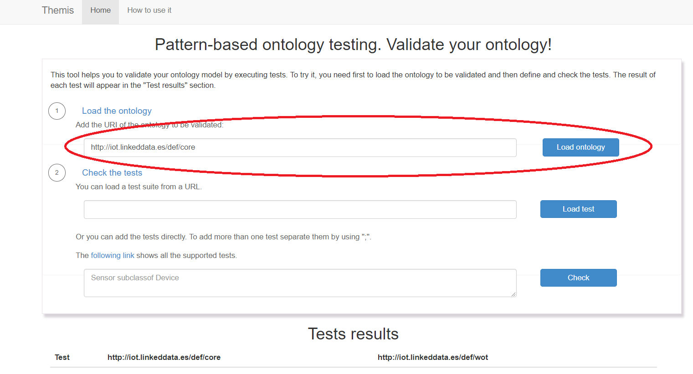
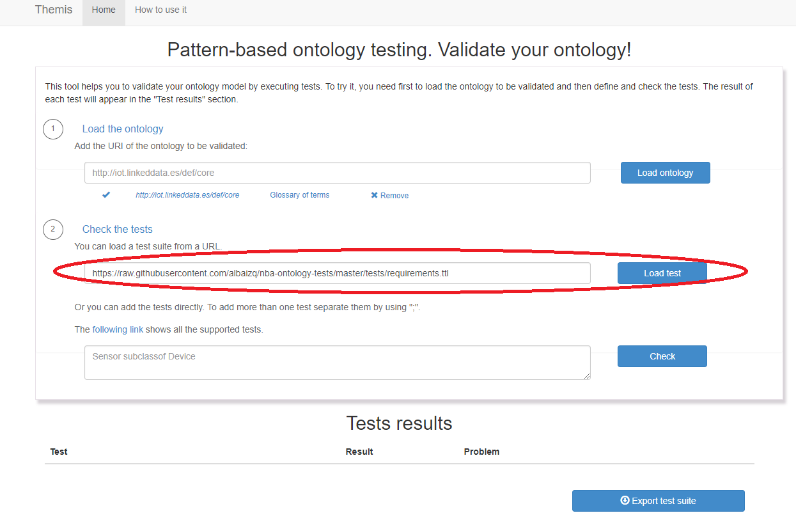
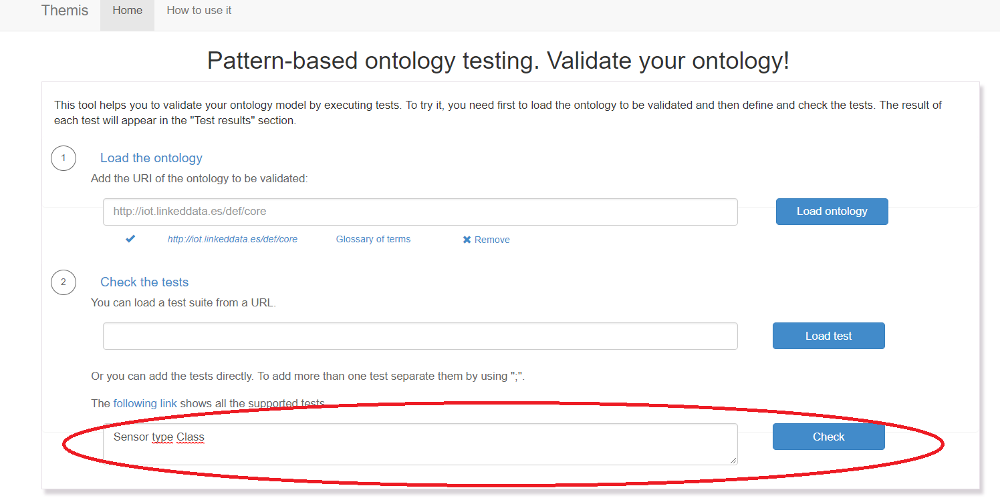
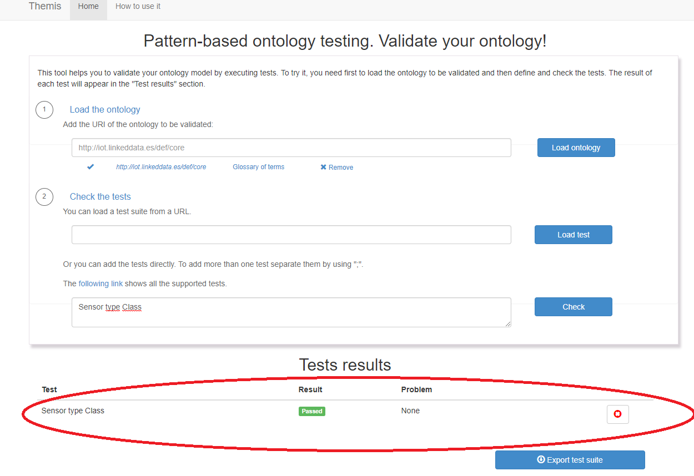

Load ontology. Insert the URI of the ontology you want to validate. You can add more than one ontologies.

Load tests. If you have tests in RDF on the web you can load them using the URI.

Insert test. You can also add tests following the syntax shown in the list of tests.

Check result. Here you can check the results of the tests. The possible results are: passed, absent relation, conflict and undefined terms. If the result is undefined, then the interface will show which terms are not defined in the ontology.

Export tests. Themis allows you to export the test cases in RDF to be able to reuse and share them.